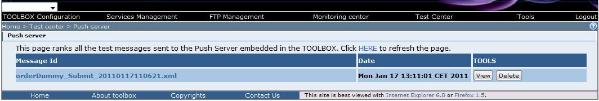

http://<TOMCAT_HOST>[:TOMCAT_PORT]/TOOLBOX/Push
Pushed messages can be viewed clicking on the Push Server section link in the monitoring page

Pushed message names has the following format <messageId>.xml, where <messageId> is the value of the "messageId" contained in the SOAP Header of the request where possible characters "<, >, :, *, |, ?" have been replaced by "_".